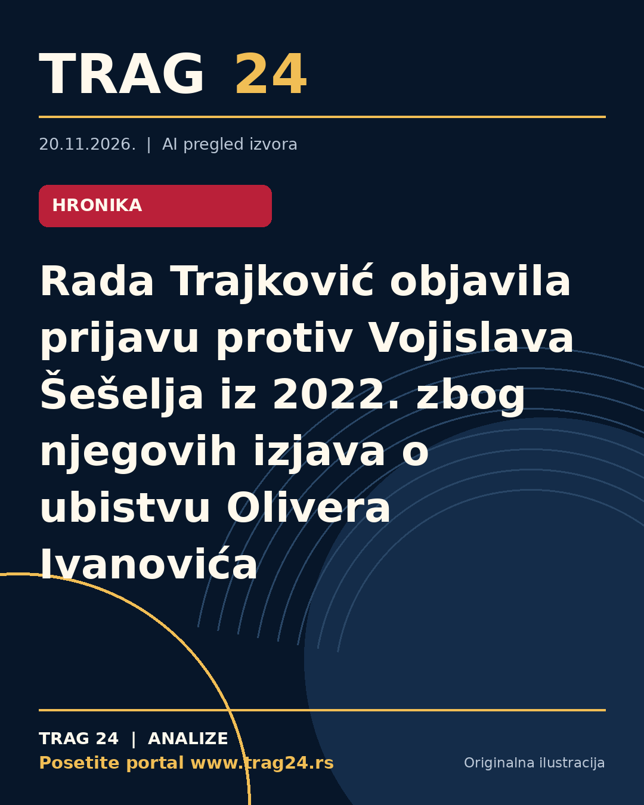

Rada Trajković objavila prijavu protiv Vojislava Šešelja iz 2022. zbog njegovih izjava o ubistvu Olivera Ivanovića

ŠTA SE DOGODILO
Predsednik Srpske radikalne stranke (SRS) Vojislav Šešelj dao je izjavu u Policijskoj upravi za grad Beograd 20. novembra 2023. godine, na poziv Prvog osnovnog javnog tužilaštva. Povod je bilo njegovo gostovanje u emisiji „Novo jutro“ na TV Pink 12. novembra 2022, gde je izneo izjave vezane za ubistvo Olivera Ivanovića i Radu Trajković. Trajković je potom javnosti objavila mejl dopis koji je 14. novembra 2022. poslala tužilaštvu i Regulatornom telu za elektronske medije (REM), u kome je tražila hitnu reakciju na Šešeljeve izjave, koje je ocenila kao pretnju njenoj bezbednosti, kao i istragu njegovih saznanja o ubistvu Ivanovića.
HRONOLOGIJA
Oliver Ivanović je ubijen 16. januara 2018. u severnom delu Kosovske Mitrovice. Šešelj je u novembru 2022. izneo na nacionalnoj televiziji pretpostavku da su Ivanovića ubili Albanci radi optuživanja Srba, a izneo je i tvrdnje o mogućem ugrožavanju Trajković. Dva dana nakon TV nastupa, Trajković je podnela prijavu i zahteve za istragu. Usledilo je višegodišnje maltretiranje njenih potomaka pri nesmetanim prelascima granice, po njenim tvrdnjama počevši od decembra 2022. Šešelj je izjavio da nije imao nameru da joj naudi, već da njegovi navodi treba da je upozore da prekine saradnju sa vlastima u Prištini. Do kraja 2023. istraga o ubistvu Ivanovića u Srbiji nije formalno pokrenuta, predmet je i dalje u predistražnoj fazi.
ŠTA NAVODE IZVORI
Iz medijskih tekstova Vreme, Danas i N1 proizilazi da su izjave Šešelja izazvale pravnu i javnu reakciju. Trajković je, oslanjajući se na svoj zahtev iz 2022, izražavala zabrinutost za svoju bezbednost i navodila dugotrajna pritiske na sebe i porodicu nakon Šešeljevih izjava. Šešelj je istakao da njegove reči nisu bile poziv na nasilje i da nema nameru da joj nanese štetu. Tužilaštvo za organizovani kriminal u Srbiji je potvrdilo da istraga o ubistvu Ivanovića u Srbiji nije formalno otvorena, predmet se vodi kao poverljiv i nema saopštenja o konkretnim radnjama.
ŠTA JE POTVRĐENO
Potvrđeno je da je Vojislav Šešelj u novembru 2023. dao izjavu policiji povodom svog nastupa iz 2022, da je Rada Trajković 14. novembra 2022. podnela prijavu i zahteve tužilaštvu i REM-u povodom izjava koje je ocenila kao pretnju, kao i da predmet ubistva Olivera Ivanovića u Srbiji nije formalno prešao iz predistražne faze. Takođe potvrđene su prvostepene presude osnovnog suda u Prištini za nekoliko osumnjičenih u vezi sa ubistvom Ivanovića, ali bez navođenja nalogodavca ili neposrednog izvršioca.
ŠTA NIJE POTVRĐENO
Nije potvrđeno da Šešelj poseduje tačna saznanja o nalogodavcima ili izvršiocima ubistva Olivera Ivanovića niti da je bilo ko iz Srbije zvanično optužen za organizaciju ili direktnu umešanost u ubistvo. Takođe nije potvrđeno kakve konkretne radnje tužilaštvo Srbije preduzima u vezi sa njegovim izjavama ili prijavom Trajković, kao ni da su navodi o maltretiranju njene dece od strane graničnih vlasti zvanično istraženi ili dokumentovani.
ŠTA OSTАJE OTVORENO: Ostaje nepoznato kako će se razvijati istraga o ubistvu u Srbiji i hoće li biti konkretnih pravosudnih koraka u vezi sa Šešeljevim tvrdnjama i prijavom Trajković. Pitanje zaštite bezbednosti Rade Trajković i njene porodice nakon javnih pretnji takođe ostaje otvoreno, kao i politički i pravni značaj izjava funkcionera u javnim medijima. Dodatno je nejasno zbog čega je došlo do višegodišnjeg odlaganja reakcija institucija na prijavu iz 2022. godine.
Izvori
- https://vreme.com/vesti/sta-seselj-zna-o-ubistvu-ivanovica-trajkovic-objavila-prijavu-iz-2022/
- https://www.danas.rs/vesti/politika/rada-trajkovic-objavila-prijavu-protiv-seselja-iz-2022-trazila-da-tuzilastvo-ispita-njegova-saznanja-o-ubistvu-olivera-ivanovica-tvrdi-da-su-joj-potom-maltretirali-decu/
- https://n1info.rs/vesti/rada-trajkovic-objavila-prijavu-protiv-seselja-iz-2022-godine/
Ova analiza je pripremljena uz pomoć veštačke inteligencije na osnovu javno dostupnih izvora. Navodi izvora nisu nužno nezavisno potvrđeni.